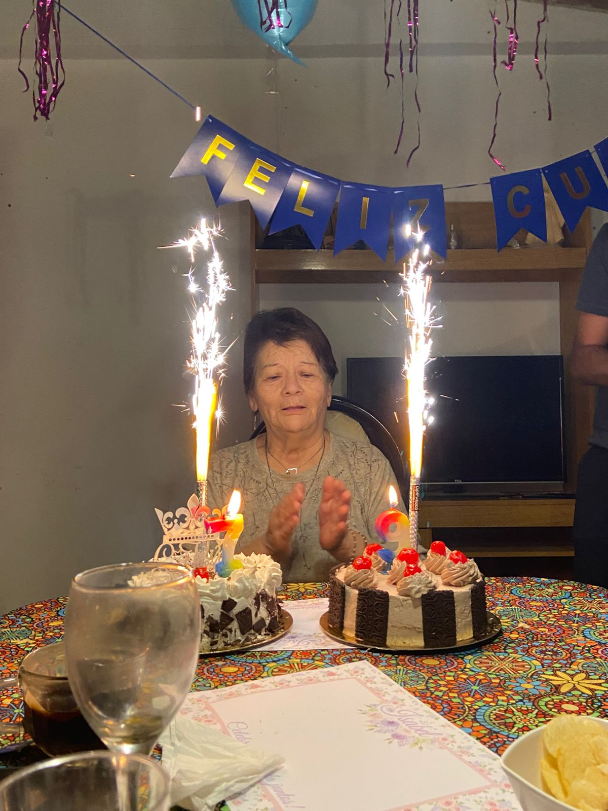
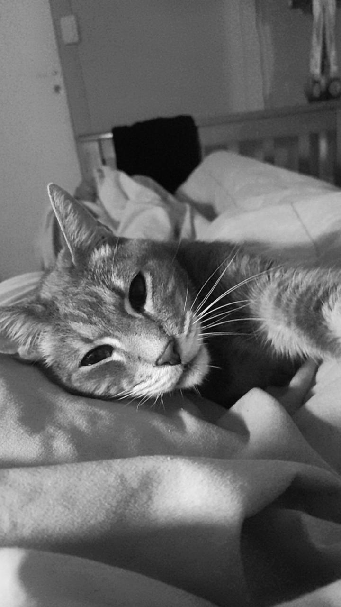
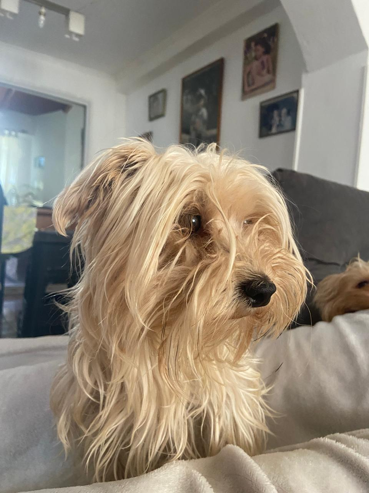

Naci en Cutral-co el 3 de marzo de 2008 en la clinica Neuquen, podria haber nacido antes, durante los ultimos dias de febrero pero mi mama decidio aguantar un poco mas para que nazca mas sana. Antes de mi tuvieron a mi hermano con el que me llevo dos años y cuatro meses, pero ni parecia que es mas grande jajaj.
Mi familia esta compuesta por mi mama, papa, mi hermano y yo. Cuando tuvieron a mi hermano decidieron venir a Neuquen a vivir por razones laborales por lo tanto, nunca llegue a vivir alla pero solemos ir a visitar a mi familia bastante seguido.
Somos varios integrantes en mi familia de parte paterna, tengo en total 28 primos, ocho tios y una abuela. Sin contarnos a mi hermano y a mi, somos esa cantidad.
La unica razon por la que vamos actualmente a Cutral-Co es por mi abuela pipi. No por algo en particular, solo porque tenemos mas relacion con ella que con el resto, pero bueno.
La verdad que no de que mas hablar sobre mi, asi que voy a hablar de mis mascotas. Tengo 5 en total, dos gatos y tres perros.
Max y Mia son mios, Pedro es de mi mama, Luci es de mi papa, y Coquita es de mi hermano
El es Max:
El es Pedro:
Para volver a la pagina principal, ingresar al siguiente enlace.
Pagina Principal